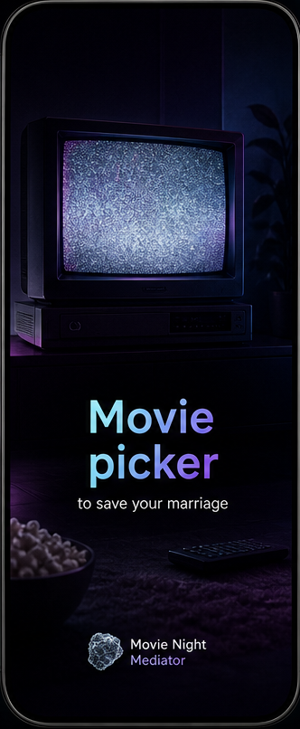
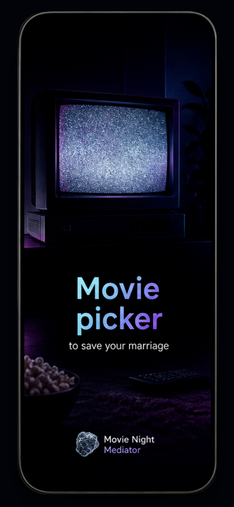
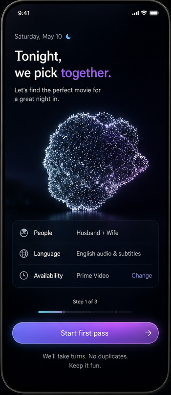
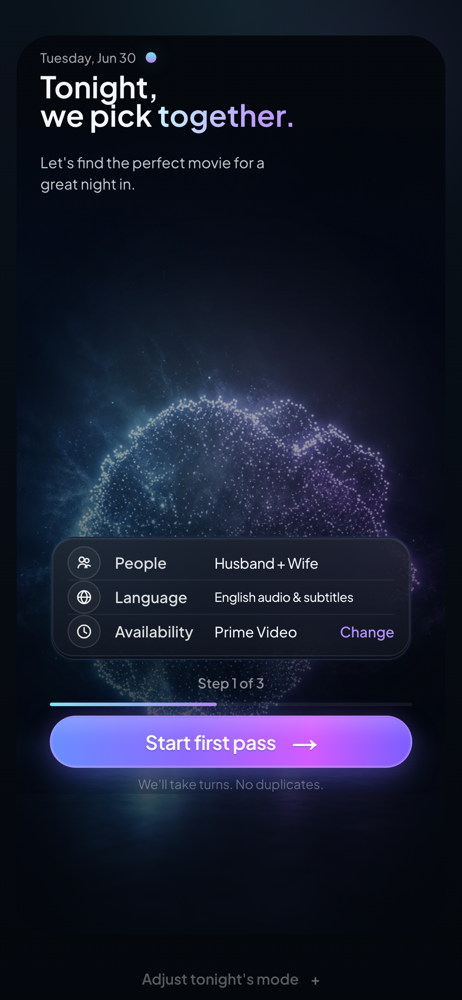
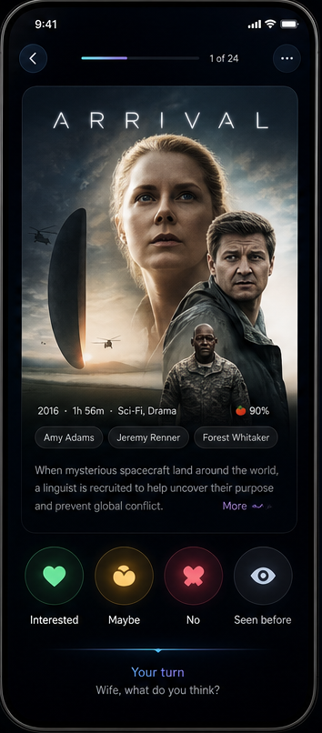
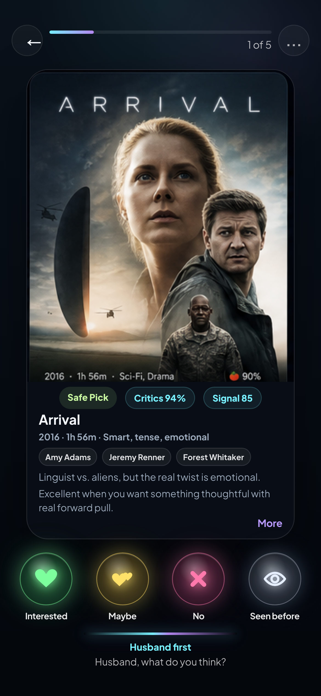
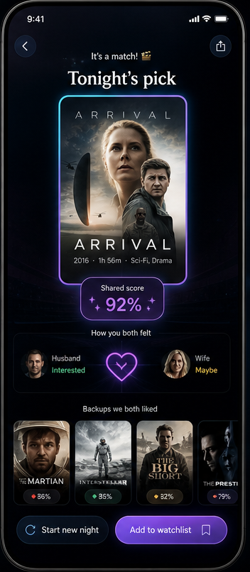
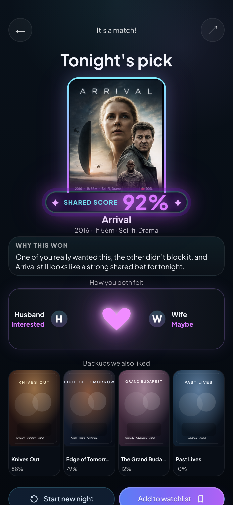

Reference
cropped from north-star
Compare: TV object, title scale, glow, and empty space.
brand presence
object realism
opening mood
Movie Night Mediator
Each section pairs the cropped north-star reference with the matching current implementation screen. Use this page to annotate exact visual mismatches without guessing which screenshot a note belongs to.
First impression check: brand signal, cinematic object, app title, and whether the current opening moment feels as intentional as the reference.

Compare: TV object, title scale, glow, and empty space.

Critique here: note what should be lifted directly from the reference.
Main remaining weakness check: layout density, chooser affordance, hierarchy, and whether this feels like the same product as the stronger later screens.

Compare: heading rhythm, profile rows, chips, and action area.

Critique here: call out anything that should be copied more literally.
Pass-the-phone check: poster scale, choice controls, footer treatment, and whether the screen still feels usable when someone is moving quickly.

Compare: poster focus, stacked actions, and bottom pass cue.

Critique here: point to any remaining overbuilt areas or missing asset cues.
Reveal check: winner impact, backup readability, score treatment, and whether the final moment feels celebratory without getting noisy.

Compare: reveal scale, ranking rhythm, and supporting metadata.

Critique here: identify any areas where a direct reference copy would win.